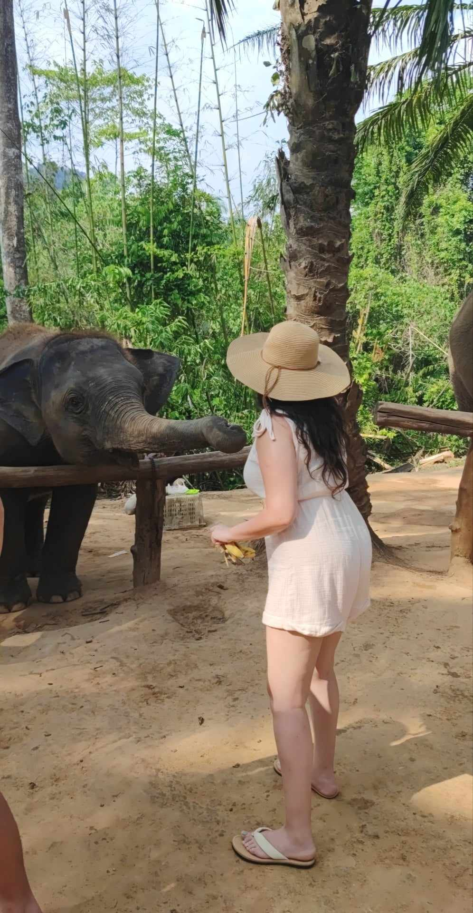

About Me
I am Khouloud, a Full-Stack Web Developer. I am a freshly certified full-stack developer from CareerFoundry, and I live in Berlin. My journey in coding is supported by my background in accounting and fueled by a passion for creating solutions that are both technically proficient and user-friendly, enhancing overall user experience.
In my free time, I love traveling and have explored countries from different continents, such as Thailand and Seychelles, where I enjoyed discovering diverse cultures. I'm also passionate about reading on a variety of subjects, with Emotional Intelligence by Daniel Goleman being one of my favorite books. Cooking is another hobby of mine, and I enjoy experimenting with dishes from various cuisines around the world. Additionally, I practice yoga, which helps me maintain balance and mindfulness in my daily life.
Past careers
As an accountant, I worked with over 25 companies, managing financial reports, bookkeeping, and tax filings. I processed over 100 invoices monthly, handled payroll for 50 employees, and conducted both internal and external audits. Throughout my experience, I consistently delivered accurate results while meeting deadlines and collaborating with teams.
Accountant turned web developer
I initially thought accounting would satisfy my desire to solve problems, but it quickly became clear that it was more about following set processes than true problem-solving. I realized I wanted to create and build things from scratch, much like playing with Legos. That's when I started learning to code on my own. I did some research into the most in-demand programming languages and found that JavaScript, Ruby, and Python were leading the way. I chose to focus on JavaScript, along with additional skills like HTML and CSS, and my journey as a developer took off from there. This led me to decide to learn full-stack development to further enhance my skills and build complete web solutions.
skills